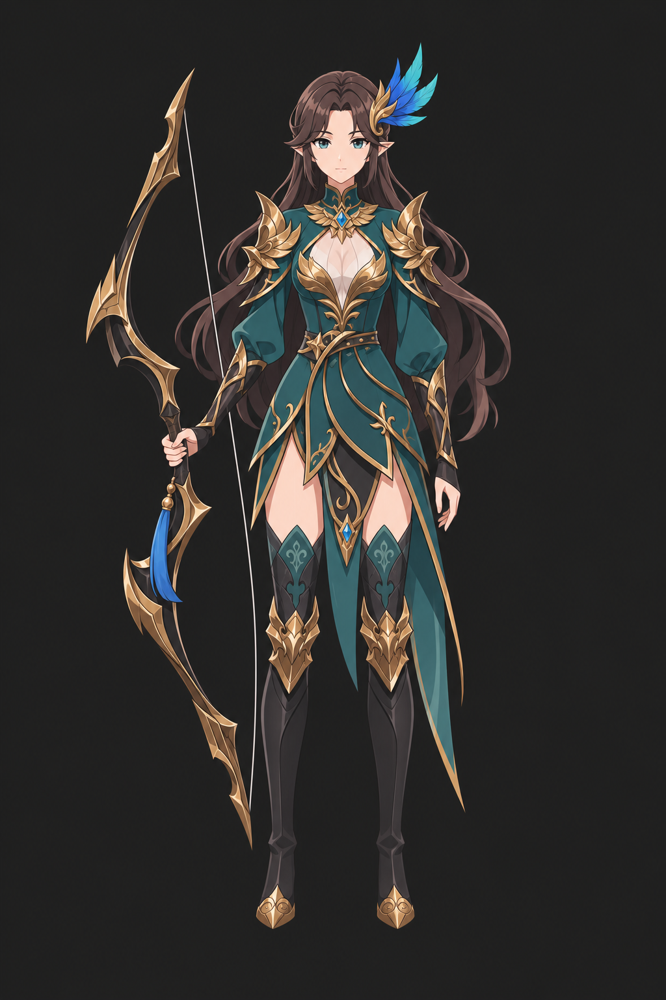

C3-1 · 정면

실제 프롬프트와 참조 순서
원대화 387행 · 18:44:48 KST · 보관된 실행 원문
- c03_design_green_archer.jfif
design_components_only - F01_Edel.jfif
primary_drawing_style_Edel - F04_Lire.jfif
secondary_material_organic_bow_Lire - pose_front.png
composition_only
Use case: stylized-concept. Generate ONE polished 2D anime fantasy-game adult female archer illustration, straight-on FRONT full body, portrait 2:3 preferably 1024x1536. Input order: 1 = DESIGN COMPONENTS ONLY (brown-haired teal/gold archer); 2 = Edel, PRIMARY DRAWING STYLE/face simplification/cel shading; 3 = Lire, SECONDARY MATERIAL/organic bow readability only; 4 = front pose COMPOSITION ONLY. Ignore source 1's painted realism, anatomy and individual facial likeness. Never copy the blonde hair/green outfit of source 3 or robe/flower of source 4. Maintain the design inventory from source 1: long dark brown flowing hair and a blue/cyan feather hair ornament attached with a small gold fitting, teal green fitted long-sleeve split tunic/dress with its white/cream chest inset, gold leaflike neckline and pointed shoulder armor, dark gloves/bracers, slender gold botanical trim, waist belt details and asymmetric long teal fabric panels, black thigh-high boots with dark green sections and gold leaf-shaped knee/shin plates and pointed toe guards. One large ornate dark bronze-and-gold recurve bow, real taut bowstring, its characteristic long swept angular limbs and small blue tassel; no extra weapons. Keep these components and colors recognizably distinct from the style references. REBUILD to the shared STANDARD ADULT FEMALE: about 7.5 heads tall, long legs, normal small head, narrow refined shoulders, slim but credible torso, normal hands. Create a new clean anime face with clear upper eyelids, small simplified nose/mouth, calm attentive expression; do not retain the original realistic face geometry or unusual individual height/body proportions. Preserve appropriate coverage and all costume layers, with no added revealing cuts. Fine crisp tapered 2D anime lines, larger hair locks with selective interior strands, coherent broad cel-shaded color/shadow planes, soft restrained skin, matte teal fabric, sharp selective gold metal facets. The target is the drawing style of images 2/3, not source 1's 3D/painterly realism. No photographic material noise, thick comic outlines or plastic skin. Neutral straight-on standing composition: face, shoulders, torso, hips and knees face camera, feet planted. Arms generally lowered; right hand loosely holds the bow at her side so its complete silhouette and taut string remain visible, left hand relaxed by the other side. No hand-on-hip contrapposto, drawing an arrow, action pose or dramatic camera angle. Bow, hair ornament, hair ends and both feet fit inside frame, no cropping. Plain dark charcoal #202020 backdrop like image 4; no scenery, text, watermark, floor line or magical effects. Shared ground baseline about 95% image height, female crown-to-soles about 82% of canvas so she reads slightly shorter than the male of the set. One character and ONE VIEW only.